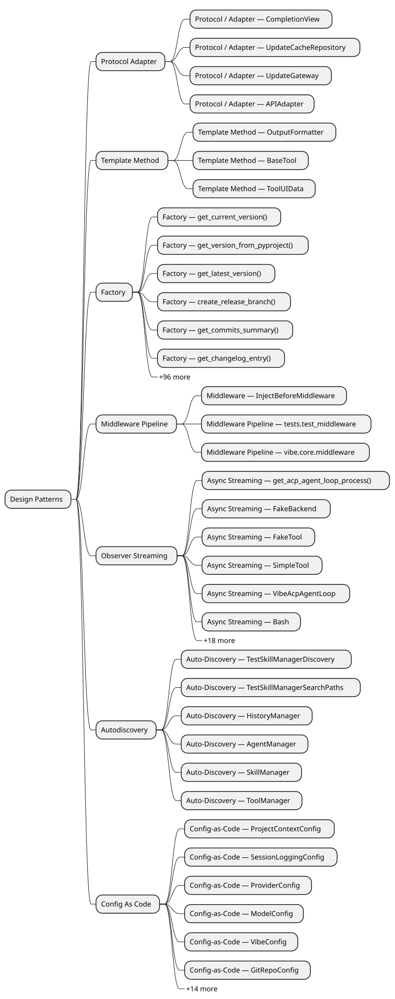

Design Patterns¶

Autodiscovery¶
Auto-Discovery — TestSkillManagerDiscovery¶
TestSkillManagerDiscovery auto-discovers plugins via test_discovers_no_skills_when_directory_empty(), test_discovers_skill_from_skill_paths(), test_discovers_multiple_skills().
Files:
- tests/skills/test_manager.py
Auto-Discovery — TestSkillManagerSearchPaths¶
TestSkillManagerSearchPaths auto-discovers plugins via test_discovers_from_vibe_skills_when_cwd_trusted(), test_discovers_from_agents_skills_when_cwd_trusted(), test_discovers_from_both_vibe_and_agents_skills_when_cwd_trusted().
Files:
- tests/skills/test_manager.py
Auto-Discovery — HistoryManager¶
HistoryManager auto-discovers plugins via _load_history().
Files:
- vibe/cli/history_manager.py
Auto-Discovery — AgentManager¶
AgentManager auto-discovers plugins via register_agent(), _discover_agents(), _try_load_agent().
Files:
- vibe/core/agents/manager.py
Auto-Discovery — SkillManager¶
SkillManager auto-discovers plugins via _discover_skills(), _discover_skills_in_dir(), _try_load_skill().
Files:
- vibe/core/skills/manager.py
Auto-Discovery — ToolManager¶
ToolManager auto-discovers plugins via _iter_tool_classes(), _load_tools_from_file(), discover_tool_defaults().
Files:
- vibe/core/tools/manager.py
Config As Code¶
Config-as-Code — ProjectContextConfig¶
ProjectContextConfig in vibe.core.config uses Pydantic for typed configuration with 8 field(s).
Files:
- vibe/core/config.py
Config-as-Code — SessionLoggingConfig¶
SessionLoggingConfig in vibe.core.config uses Pydantic for typed configuration with 3 field(s).
Files:
- vibe/core/config.py
Config-as-Code — ProviderConfig¶
ProviderConfig in vibe.core.config uses Pydantic for typed configuration with 8 field(s).
Files:
- vibe/core/config.py
Config-as-Code — ModelConfig¶
ModelConfig in vibe.core.config uses Pydantic for typed configuration with 7 field(s).
Files:
- vibe/core/config.py
Config-as-Code — VibeConfig¶
VibeConfig in vibe.core.config uses Pydantic for typed configuration with 39 field(s).
Files:
- vibe/core/config.py
Config-as-Code — GitRepoConfig¶
GitRepoConfig in vibe.core.teleport.nuage uses Pydantic for typed configuration with 3 field(s).
Files:
- vibe/core/teleport/nuage.py
Config-as-Code — VibeSandboxConfig¶
VibeSandboxConfig in vibe.core.teleport.nuage uses Pydantic for typed configuration with 1 field(s).
Files:
- vibe/core/teleport/nuage.py
Config-as-Code — BaseToolConfig¶
BaseToolConfig in vibe.core.tools.base uses Pydantic for typed configuration with 4 field(s).
Files:
- vibe/core/tools/base.py
Config-as-Code — AskUserQuestionConfig¶
AskUserQuestionConfig in vibe.core.tools.builtins.ask_user_question uses Pydantic for typed configuration with 1 field(s).
Files:
- vibe/core/tools/builtins/ask_user_question.py
Config-as-Code — BashToolConfig¶
BashToolConfig in vibe.core.tools.builtins.bash uses Pydantic for typed configuration with 6 field(s).
Files:
- vibe/core/tools/builtins/bash.py
Config-as-Code — GrepToolConfig¶
GrepToolConfig in vibe.core.tools.builtins.grep uses Pydantic for typed configuration with 6 field(s).
Files:
- vibe/core/tools/builtins/grep.py
Config-as-Code — ReadFileToolConfig¶
ReadFileToolConfig in vibe.core.tools.builtins.read_file uses Pydantic for typed configuration with 2 field(s).
Files:
- vibe/core/tools/builtins/read_file.py
Config-as-Code — SearchReplaceConfig¶
SearchReplaceConfig in vibe.core.tools.builtins.search_replace uses Pydantic for typed configuration with 3 field(s).
Files:
- vibe/core/tools/builtins/search_replace.py
Config-as-Code — TaskToolConfig¶
TaskToolConfig in vibe.core.tools.builtins.task uses Pydantic for typed configuration with 2 field(s).
Files:
- vibe/core/tools/builtins/task.py
Config-as-Code — TodoConfig¶
TodoConfig in vibe.core.tools.builtins.todo uses Pydantic for typed configuration with 2 field(s).
Files:
- vibe/core/tools/builtins/todo.py
Config-as-Code — WebFetchConfig¶
WebFetchConfig in vibe.core.tools.builtins.webfetch uses Pydantic for typed configuration with 5 field(s).
Files:
- vibe/core/tools/builtins/webfetch.py
Config-as-Code — WebSearchConfig¶
WebSearchConfig in vibe.core.tools.builtins.websearch uses Pydantic for typed configuration with 3 field(s).
Files:
- vibe/core/tools/builtins/websearch.py
Config-as-Code — WikiDiagramConfig¶
WikiDiagramConfig in vibe.core.tools.builtins.wiki_diagram uses Pydantic for typed configuration with 3 field(s).
Files:
- vibe/core/tools/builtins/wiki_diagram.py
Config-as-Code — WikiDocConfig¶
WikiDocConfig in vibe.core.tools.builtins.wiki_doc uses Pydantic for typed configuration with 1 field(s).
Files:
- vibe/core/tools/builtins/wiki_doc.py
Config-as-Code — WriteFileConfig¶
WriteFileConfig in vibe.core.tools.builtins.write_file uses Pydantic for typed configuration with 3 field(s).
Files:
- vibe/core/tools/builtins/write_file.py
Factory¶
Factory — get_current_version()¶
get_current_version() in scripts.bump_version creates str.
Files:
- scripts/bump_version.py
Factory — get_version_from_pyproject()¶
get_version_from_pyproject() in scripts.prepare_release creates str.
Files:
- scripts/prepare_release.py
Factory — get_latest_version()¶
get_latest_version() in scripts.prepare_release creates str.
Files:
- scripts/prepare_release.py
Factory — create_release_branch()¶
create_release_branch() in scripts.prepare_release creates None.
Files:
- scripts/prepare_release.py
Factory — get_commits_summary()¶
get_commits_summary() in scripts.prepare_release creates str.
Files:
- scripts/prepare_release.py
Factory — get_changelog_entry()¶
get_changelog_entry() in scripts.prepare_release creates str.
Files:
- scripts/prepare_release.py
Factory — get_acp_agent_loop_process()¶
get_acp_agent_loop_process() in tests.acp.test_acp creates AsyncGenerator[asyncio.subprocess.Process].
Files:
- tests/acp/test_acp.py
Factory — make_controller()¶
make_controller() in tests.autocompletion.test_path_completion_controller creates tuple[PathCompletionController, StubView].
Files:
- tests/autocompletion/test_path_completion_controller.py
Factory — make_controller()¶
make_controller() in tests.autocompletion.test_slash_command_controller creates tuple[SlashCommandController, StubView].
Files:
- tests/autocompletion/test_slash_command_controller.py
Factory — get_base_config()¶
get_base_config() in tests.conftest creates dict[str, Any].
Files:
- tests/conftest.py
Factory — build_test_vibe_config()¶
build_test_vibe_config() in tests.conftest creates VibeConfig.
Files:
- tests/conftest.py
Factory — build_test_agent_loop()¶
build_test_agent_loop() in tests.conftest creates AgentLoop.
Files:
- tests/conftest.py
Factory — build_test_vibe_app()¶
build_test_vibe_app() in tests.conftest creates VibeApp.
Files:
- tests/conftest.py
Factory — make_mock_remote()¶
make_mock_remote() in tests.core.test_teleport_git creates MagicMock.
Files:
- tests/core/test_teleport_git.py
Factory — make_mock_repo()¶
make_mock_repo() in tests.core.test_teleport_git creates MagicMock.
Files:
- tests/core/test_teleport_git.py
Factory — StreamingMockServer.build_chunk()¶
StreamingMockServer.build_chunk() creates StreamChunk.
Files:
- tests/e2e/mock_server.py
Factory — StreamingMockServer.build_tool_call_delta()¶
StreamingMockServer.build_tool_call_delta() creates dict[str, object].
Files:
- tests/e2e/mock_server.py
Factory — get_mocking_env()¶
get_mocking_env() in tests.mock.utils creates dict[str, str].
Files:
- tests/mock/utils.py
Factory — create_temp_file_ago()¶
create_temp_file_ago() in tests.session.test_session_logger creates Path.
Files:
- tests/session/test_session_logger.py
Factory — create_skill()¶
create_skill() in tests.skills.conftest creates Path.
Files:
- tests/skills/conftest.py
Factory — FakeTool.get_name()¶
FakeTool.get_name() creates str.
Files:
- tests/stubs/fake_tool.py
Factory — make_config()¶
make_config() in tests.test_agent_observer_streaming creates VibeConfig.
Files:
- tests/test_agent_observer_streaming.py
Factory — make_config()¶
make_config() in tests.test_agent_stats creates VibeConfig.
Files:
- tests/test_agent_stats.py
Factory — make_config()¶
make_config() in tests.test_agent_tool_call creates VibeConfig.
Files:
- tests/test_agent_tool_call.py
Factory — make_todo_tool_call()¶
make_todo_tool_call() in tests.test_agent_tool_call creates ToolCall.
Files:
- tests/test_agent_tool_call.py
Factory — make_agent_loop()¶
make_agent_loop() in tests.test_agent_tool_call creates AgentLoop.
Files:
- tests/test_agent_tool_call.py
Factory — make_config()¶
make_config() in tests.test_reasoning_content creates VibeConfig.
Files:
- tests/test_reasoning_content.py
Factory — build_update_test_app()¶
build_update_test_app() in tests.update_notifier.test_ui_update_notification creates Callable[..., VibeApp].
Files:
- tests/update_notifier/test_ui_update_notification.py
Factory — BaseAcpTool.get_tool_instance()¶
BaseAcpTool.get_tool_instance() creates BaseAcpTool[AcpToolState].
Files:
- vibe/acp/tools/base.py
Factory — Bash.get_summary()¶
Bash.get_summary() creates str.
Files:
- vibe/acp/tools/builtins/bash.py
Factory — make_mode_response()¶
make_mode_response() in vibe.acp.utils creates tuple[SessionModeState, SessionConfigOption].
Files:
- vibe/acp/utils.py
Factory — make_model_response()¶
make_model_response() in vibe.acp.utils creates tuple[SessionModelState, SessionConfigOption].
Files:
- vibe/acp/utils.py
Factory — create_compact_start_session_update()¶
create_compact_start_session_update() in vibe.acp.utils creates ToolCallStart.
Files:
- vibe/acp/utils.py
Factory — create_compact_end_session_update()¶
create_compact_end_session_update() in vibe.acp.utils creates ToolCallProgress.
Files:
- vibe/acp/utils.py
Factory — get_proxy_help_text()¶
get_proxy_help_text() in vibe.acp.utils creates str.
Files:
- vibe/acp/utils.py
Factory — create_user_message_replay()¶
create_user_message_replay() in vibe.acp.utils creates UserMessageChunk.
Files:
- vibe/acp/utils.py
Factory — create_assistant_message_replay()¶
create_assistant_message_replay() in vibe.acp.utils creates AgentMessageChunk | None.
Files:
- vibe/acp/utils.py
Factory — create_reasoning_replay()¶
create_reasoning_replay() in vibe.acp.utils creates AgentThoughtChunk | None.
Files:
- vibe/acp/utils.py
Factory — create_tool_call_replay()¶
create_tool_call_replay() in vibe.acp.utils creates ToolCallStart.
Files:
- vibe/acp/utils.py
Factory — create_tool_result_replay()¶
create_tool_result_replay() in vibe.acp.utils creates ToolCallProgress | None.
Files:
- vibe/acp/utils.py
Factory — get_initial_agent_name()¶
get_initial_agent_name() in vibe.cli.cli creates str.
Files:
- vibe/cli/cli.py
Factory — get_prompt_from_stdin()¶
get_prompt_from_stdin() in vibe.cli.cli creates str | None.
Files:
- vibe/cli/cli.py
Factory — ExternalEditor.get_editor()¶
ExternalEditor.get_editor() creates str.
Files:
- vibe/cli/textual_ui/external_editor.py
Factory — create_spinner()¶
create_spinner() in vibe.cli.textual_ui.widgets.spinner creates Spinner.
Files:
- vibe/cli/textual_ui/widgets/spinner.py
Factory — get_approval_widget()¶
get_approval_widget() in vibe.cli.textual_ui.widgets.tool_widgets creates ToolApprovalWidget.
Files:
- vibe/cli/textual_ui/widgets/tool_widgets.py
Factory — get_result_widget()¶
get_result_widget() in vibe.cli.textual_ui.widgets.tool_widgets creates ToolResultWidget.
Files:
- vibe/cli/textual_ui/widgets/tool_widgets.py
Factory — build_tool_call_map()¶
build_tool_call_map() in vibe.cli.textual_ui.windowing.history creates dict[str, str].
Files:
- vibe/cli/textual_ui/windowing/history.py
Factory — build_history_widgets()¶
build_history_widgets() in vibe.cli.textual_ui.windowing.history creates list[Widget].
Files:
- vibe/cli/textual_ui/windowing/history.py
Factory — create_resume_plan()¶
create_resume_plan() in vibe.cli.textual_ui.windowing.history_windowing creates HistoryResumePlan | None.
Files:
- vibe/cli/textual_ui/windowing/history_windowing.py
Factory — get_update_if_available()¶
get_update_if_available() in vibe.cli.update_notifier.update creates UpdateAvailability | None.
Files:
- vibe/cli/update_notifier/update.py
Factory — build_path_prompt_payload()¶
build_path_prompt_payload() in vibe.core.autocompletion.path_prompt creates PathPromptPayload.
Files:
- vibe/core/autocompletion/path_prompt.py
Factory — VibeConfig.create_default()¶
VibeConfig.create_default() creates dict[str, Any].
Files:
- vibe/core/config.py
Factory — build_vertex_base_url()¶
build_vertex_base_url() in vibe.core.llm.backend.vertex creates str.
Files:
- vibe/core/llm/backend/vertex.py
Factory — build_vertex_endpoint()¶
build_vertex_endpoint() in vibe.core.llm.backend.vertex creates str.
Files:
- vibe/core/llm/backend/vertex.py
Factory — BackendErrorBuilder.build_http_error()¶
BackendErrorBuilder.build_http_error() creates BackendError.
Files:
- vibe/core/llm/exceptions.py
Factory — BackendErrorBuilder.build_request_error()¶
BackendErrorBuilder.build_request_error() creates BackendError.
Files:
- vibe/core/llm/exceptions.py
Factory — create_formatter()¶
create_formatter() in vibe.core.output_formatters creates OutputFormatter.
Files:
- vibe/core/output_formatters.py
Factory — get_current_proxy_settings()¶
get_current_proxy_settings() in vibe.core.proxy_setup creates dict[str, str | None].
Files:
- vibe/core/proxy_setup.py
Factory — SessionLoader.get_first_user_message()¶
SessionLoader.get_first_user_message() creates str.
Files:
- vibe/core/session/session_loader.py
Factory — get_universal_system_prompt()¶
get_universal_system_prompt() in vibe.core.system_prompt creates str.
Files:
- vibe/core/system_prompt.py
Factory — BaseTool.get_tool_prompt()¶
BaseTool.get_tool_prompt() creates str | None.
Files:
- vibe/core/tools/base.py
Factory — BaseTool.get_parameters()¶
BaseTool.get_parameters() creates dict[str, Any].
Files:
- vibe/core/tools/base.py
Factory — BaseTool.get_name()¶
BaseTool.get_name() creates str.
Files:
- vibe/core/tools/base.py
Factory — BaseTool.create_config_with_permission()¶
BaseTool.create_config_with_permission() creates BaseToolConfig.
Files:
- vibe/core/tools/base.py
Factory — AskUserQuestion.get_result_display()¶
AskUserQuestion.get_result_display() creates ToolResultDisplay.
Files:
- vibe/core/tools/builtins/ask_user_question.py
Factory — AskUserQuestion.get_status_text()¶
AskUserQuestion.get_status_text() creates str.
Files:
- vibe/core/tools/builtins/ask_user_question.py
Factory — Bash.get_result_display()¶
Bash.get_result_display() creates ToolResultDisplay.
Files:
- vibe/core/tools/builtins/bash.py
Factory — Bash.get_status_text()¶
Bash.get_status_text() creates str.
Files:
- vibe/core/tools/builtins/bash.py
Factory — Grep.get_result_display()¶
Grep.get_result_display() creates ToolResultDisplay.
Files:
- vibe/core/tools/builtins/grep.py
Factory — Grep.get_status_text()¶
Grep.get_status_text() creates str.
Files:
- vibe/core/tools/builtins/grep.py
Factory — ReadFile.get_result_display()¶
ReadFile.get_result_display() creates ToolResultDisplay.
Files:
- vibe/core/tools/builtins/read_file.py
Factory — ReadFile.get_status_text()¶
ReadFile.get_status_text() creates str.
Files:
- vibe/core/tools/builtins/read_file.py
Factory — SearchReplace.get_result_display()¶
SearchReplace.get_result_display() creates ToolResultDisplay.
Files:
- vibe/core/tools/builtins/search_replace.py
Factory — SearchReplace.get_status_text()¶
SearchReplace.get_status_text() creates str.
Files:
- vibe/core/tools/builtins/search_replace.py
Factory — Task.get_call_display()¶
Task.get_call_display() creates ToolCallDisplay.
Files:
- vibe/core/tools/builtins/task.py
Factory — Task.get_result_display()¶
Task.get_result_display() creates ToolResultDisplay.
Files:
- vibe/core/tools/builtins/task.py
Factory — Task.get_status_text()¶
Task.get_status_text() creates str.
Files:
- vibe/core/tools/builtins/task.py
Factory — Todo.get_result_display()¶
Todo.get_result_display() creates ToolResultDisplay.
Files:
- vibe/core/tools/builtins/todo.py
Factory — Todo.get_status_text()¶
Todo.get_status_text() creates str.
Files:
- vibe/core/tools/builtins/todo.py
Factory — WebFetch.get_call_display()¶
WebFetch.get_call_display() creates ToolCallDisplay.
Files:
- vibe/core/tools/builtins/webfetch.py
Factory — WebFetch.get_result_display()¶
WebFetch.get_result_display() creates ToolResultDisplay.
Files:
- vibe/core/tools/builtins/webfetch.py
Factory — WebFetch.get_status_text()¶
WebFetch.get_status_text() creates str.
Files:
- vibe/core/tools/builtins/webfetch.py
Factory — WebSearch.get_call_display()¶
WebSearch.get_call_display() creates ToolCallDisplay.
Files:
- vibe/core/tools/builtins/websearch.py
Factory — WebSearch.get_result_display()¶
WebSearch.get_result_display() creates ToolResultDisplay.
Files:
- vibe/core/tools/builtins/websearch.py
Factory — WebSearch.get_status_text()¶
WebSearch.get_status_text() creates str.
Files:
- vibe/core/tools/builtins/websearch.py
Factory — WikiDiagram.get_result_display()¶
WikiDiagram.get_result_display() creates ToolResultDisplay.
Files:
- vibe/core/tools/builtins/wiki_diagram.py
Factory — WikiDiagram.get_status_text()¶
WikiDiagram.get_status_text() creates str.
Files:
- vibe/core/tools/builtins/wiki_diagram.py
Factory — WikiDoc.get_result_display()¶
WikiDoc.get_result_display() creates ToolResultDisplay.
Files:
- vibe/core/tools/builtins/wiki_doc.py
Factory — WikiDoc.get_status_text()¶
WikiDoc.get_status_text() creates str.
Files:
- vibe/core/tools/builtins/wiki_doc.py
Factory — WriteFile.get_result_display()¶
WriteFile.get_result_display() creates ToolResultDisplay.
Files:
- vibe/core/tools/builtins/write_file.py
Factory — WriteFile.get_status_text()¶
WriteFile.get_status_text() creates str.
Files:
- vibe/core/tools/builtins/write_file.py
Factory — create_mcp_http_proxy_tool_class()¶
create_mcp_http_proxy_tool_class() in vibe.core.tools.mcp.tools creates type[BaseTool[_OpenArgs, MCPToolResult, BaseToolConfig, BaseToolState]].
Files:
- vibe/core/tools/mcp/tools.py
Factory — create_mcp_stdio_proxy_tool_class()¶
create_mcp_stdio_proxy_tool_class() in vibe.core.tools.mcp.tools creates type[BaseTool[_OpenArgs, MCPToolResult, BaseToolConfig, BaseToolState]].
Files:
- vibe/core/tools/mcp/tools.py
Factory — ToolUIData.get_no_args_display()¶
ToolUIData.get_no_args_display() creates ToolCallDisplay.
Files:
- vibe/core/tools/ui.py
Factory — ToolUIData.get_invalid_args_display()¶
ToolUIData.get_invalid_args_display() creates ToolCallDisplay.
Files:
- vibe/core/tools/ui.py
Factory — ToolUIData.get_call_display()¶
ToolUIData.get_call_display() creates ToolCallDisplay.
Files:
- vibe/core/tools/ui.py
Factory — ToolUIData.get_result_display()¶
ToolUIData.get_result_display() creates ToolResultDisplay.
Files:
- vibe/core/tools/ui.py
Factory — ToolUIData.get_status_text()¶
ToolUIData.get_status_text() creates str.
Files:
- vibe/core/tools/ui.py
Factory — AgentStats.create_fresh()¶
AgentStats.create_fresh() creates AgentStats.
Files:
- vibe/core/types.py
Factory — get_user_cancellation_message()¶
get_user_cancellation_message() in vibe.core.utils creates TaggedText.
Files:
- vibe/core/utils.py
Factory — get_user_agent()¶
get_user_agent() in vibe.core.utils creates str.
Files:
- vibe/core/utils.py
Factory — build_wiki_site()¶
build_wiki_site() in vibe.core.wiki.site_builder creates WikiBuildResult.
Files:
- vibe/core/wiki/site_builder.py
Middleware Pipeline¶
Middleware — InjectBeforeMiddleware¶
InjectBeforeMiddleware in tests.test_agent_observer_streaming acts as a middleware component.
Files:
- tests/test_agent_observer_streaming.py
Middleware Pipeline — tests.test_middleware¶
Module tests.test_middleware implements a middleware pipeline.
Files:
- tests/test_middleware.py
Middleware Pipeline — vibe.core.middleware¶
Module vibe.core.middleware implements a middleware pipeline.
Files:
- vibe/core/middleware.py
Observer Streaming¶
Async Streaming — get_acp_agent_loop_process()¶
get_acp_agent_loop_process() in tests.acp.test_acp yields an async stream.
Files:
- tests/acp/test_acp.py
Async Streaming — FakeBackend¶
FakeBackend uses AsyncGenerator streaming in 1 method(s): complete_streaming.
Files:
- tests/stubs/fake_backend.py
Async Streaming — FakeTool¶
FakeTool uses AsyncGenerator streaming in 1 method(s): run.
Files:
- tests/stubs/fake_tool.py
Async Streaming — SimpleTool¶
SimpleTool uses AsyncGenerator streaming in 1 method(s): run.
Files:
- tests/tools/test_invoke_context.py
Async Streaming — VibeAcpAgentLoop¶
VibeAcpAgentLoop uses AsyncGenerator streaming in 1 method(s): _run_agent_loop.
Files:
- vibe/acp/acp_agent_loop.py
Async Streaming — Bash¶
Bash uses AsyncGenerator streaming in 1 method(s): run.
Files:
- vibe/acp/tools/builtins/bash.py
Async Streaming — AgentLoop¶
AgentLoop uses AsyncGenerator streaming in 10 method(s): act, _teleport_generator, _handle_middleware_result, _conversation_loop.
Files:
- vibe/core/agent_loop.py
Async Streaming — GenericBackend¶
GenericBackend uses AsyncGenerator streaming in 2 method(s): complete_streaming, _make_streaming_request.
Files:
- vibe/core/llm/backend/generic.py
Async Streaming — MistralBackend¶
MistralBackend uses AsyncGenerator streaming in 1 method(s): complete_streaming.
Files:
- vibe/core/llm/backend/mistral.py
Async Streaming — TeleportService¶
TeleportService uses AsyncGenerator streaming in 1 method(s): execute.
Files:
- vibe/core/teleport/teleport.py
Async Streaming — BaseTool¶
BaseTool uses AsyncGenerator streaming in 2 method(s): run, invoke.
Files:
- vibe/core/tools/base.py
Async Streaming — AskUserQuestion¶
AskUserQuestion uses AsyncGenerator streaming in 1 method(s): run.
Files:
- vibe/core/tools/builtins/ask_user_question.py
Async Streaming — Bash¶
Bash uses AsyncGenerator streaming in 1 method(s): run.
Files:
- vibe/core/tools/builtins/bash.py
Async Streaming — Grep¶
Grep uses AsyncGenerator streaming in 1 method(s): run.
Files:
- vibe/core/tools/builtins/grep.py
Async Streaming — ReadFile¶
ReadFile uses AsyncGenerator streaming in 1 method(s): run.
Files:
- vibe/core/tools/builtins/read_file.py
Async Streaming — SearchReplace¶
SearchReplace uses AsyncGenerator streaming in 1 method(s): run.
Files:
- vibe/core/tools/builtins/search_replace.py
Async Streaming — Task¶
Task uses AsyncGenerator streaming in 1 method(s): run.
Files:
- vibe/core/tools/builtins/task.py
Async Streaming — Todo¶
Todo uses AsyncGenerator streaming in 1 method(s): run.
Files:
- vibe/core/tools/builtins/todo.py
Async Streaming — WebFetch¶
WebFetch uses AsyncGenerator streaming in 1 method(s): run.
Files:
- vibe/core/tools/builtins/webfetch.py
Async Streaming — WebSearch¶
WebSearch uses AsyncGenerator streaming in 1 method(s): run.
Files:
- vibe/core/tools/builtins/websearch.py
Async Streaming — WikiDiagram¶
WikiDiagram uses AsyncGenerator streaming in 1 method(s): run.
Files:
- vibe/core/tools/builtins/wiki_diagram.py
Async Streaming — WikiDoc¶
WikiDoc uses AsyncGenerator streaming in 1 method(s): run.
Files:
- vibe/core/tools/builtins/wiki_doc.py
Async Streaming — WriteFile¶
WriteFile uses AsyncGenerator streaming in 1 method(s): run.
Files:
- vibe/core/tools/builtins/write_file.py
Async Streaming — _mcp_stderr_capture()¶
_mcp_stderr_capture() in vibe.core.tools.mcp.tools yields an async stream.
Files:
- vibe/core/tools/mcp/tools.py
Protocol Adapter¶
Protocol / Adapter — CompletionView¶
CompletionView defines a port with 2 adapter(s): StubView, StubView.
Files:
- vibe/cli/autocompletion/base.py
- tests/autocompletion/test_path_completion_controller.py
- tests/autocompletion/test_slash_command_controller.py
Protocol / Adapter — UpdateCacheRepository¶
UpdateCacheRepository defines a port with 2 adapter(s): FakeUpdateCacheRepository, FileSystemUpdateCacheRepository.
Files:
- vibe/cli/update_notifier/ports/update_cache_repository.py
- tests/update_notifier/adapters/fake_update_cache_repository.py
- vibe/cli/update_notifier/adapters/filesystem_update_cache_repository.py
Protocol / Adapter — UpdateGateway¶
UpdateGateway defines a port with 3 adapter(s): FakeUpdateGateway, GitHubUpdateGateway, PyPIUpdateGateway.
Files:
- vibe/cli/update_notifier/ports/update_gateway.py
- tests/update_notifier/adapters/fake_update_gateway.py
- vibe/cli/update_notifier/adapters/github_update_gateway.py
- vibe/cli/update_notifier/adapters/pypi_update_gateway.py
Protocol / Adapter — APIAdapter¶
APIAdapter defines a port with 2 adapter(s): AnthropicAdapter, OpenAIAdapter.
Files:
- vibe/core/llm/backend/base.py
- vibe/core/llm/backend/anthropic.py
- vibe/core/llm/backend/generic.py
Template Method¶
Template Method — OutputFormatter¶
OutputFormatter defines 3 abstract hook(s) (on_message_added, on_event, finalize) with 1 concrete method(s) providing the template.
Files:
- vibe/core/output_formatters.py
Template Method — BaseTool¶
BaseTool defines 1 abstract hook(s) (run) with 9 concrete method(s) providing the template.
Files:
- vibe/core/tools/base.py
Template Method — ToolUIData¶
ToolUIData defines 2 abstract hook(s) (get_result_display, get_status_text) with 4 concrete method(s) providing the template.
Files:
- vibe/core/tools/ui.py